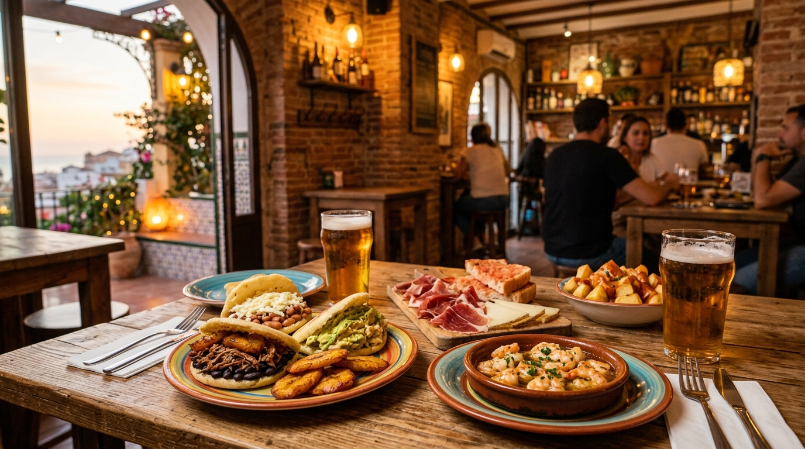

Tapas auténticas y las mejores arepas de Alicante, con cerveza artesanal y un ambiente que enamora.
Reina Pepiada, Carne Mechada, Dominó… hechas al momento con masa de maíz artesanal.
Bravas, pimientos del padrón, croquetas, jamón ibérico… lo mejor de la tradición española.
Cerveza bien tirada, sangría casera, mojitos y combinados a precios que enamoran.
Disfruta del sol de Alicante en nuestra terraza con música y ambiente inmejorable.
En Tapa La Caña creemos que la mejor comida nace de la unión de culturas. Por eso fusionamos lo mejor de la cocina española de toda la vida — las bravas, las croquetas, el jamón — con los sabores auténticos de Venezuela: arepas rellenas al momento, empanadas crujientes y ese cariño latino que se nota en cada plato.
Abrimos nuestras puertas en la Calle Sacerdote Isidro Albert, en el corazón de Alicante, y desde entonces nos hemos convertido en el rincón favorito de vecinos, familias y amigos que buscan comer bien, sin pretensiones y a buen precio.
"Las arepas están increíbles, sobre todo la Reina Pepiada. Un trocito de Venezuela en Alicante. El trato es genial y los precios muy bien."
"Fuimos por las tapas y nos quedamos por el ambiente. Las bravas están de muerte y la sangría casera es la mejor que he probado en la zona."
"Sitio acogedor, comida casera y raciones generosas. César siempre pendiente de que estés a gusto. Repetimos cada semana sin falta."
* Cocina abierta hasta 30 min antes del cierre
Reserva tu mesa en un toque o escríbenos por WhatsApp. César y el equipo te esperan con la caña bien fría.
+34 722 68 63 34